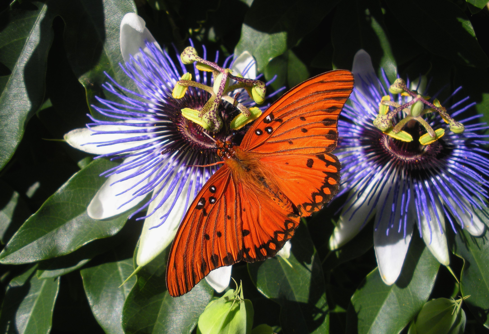

Passiflora incarnata
| common name | passionflower | |
| en español | pasionaria, flor de la pasión | |
| plant family | Passifloraceae (passionflower) | |
| parts used | fresh and dried aerial parts |
 from Wikimedia Commons by Gwillhickers - Own work, CC BY-SA 4.0
observations/description
dried leaves
- longish pieces of emerald green leaves, some light green, some light beige
- slightly pungent aroma, a little lemony
"Passiflora incarnata", Wikipedia
- stems can be smooth or pubescent; they are long and trailing, possessing many tendrils
- leaves are alternate and palmately three lobed and occasionally five lobed
- two characteristic glands at the base of the blade on the petiole that secrete drops of sweet nectar
- flowers have five bluish-white petals with a white and purple corona, a structure of fine appendages between the petals and stamens
- the large flower is typically arranged in a ring above the petals and sepals
- the fleshy fruit, also referred to as a maypop, is an oval yellowish berry about the size of a hen egg
- larval food of a number of lepidoptera species, including the zebra longwing, the Gulf fritillary, the crimson-patched longwing, the Julia, the Plebeian sphinx, and the variegated fritillary
- occurs in thickets, disturbed areas, near riverbanks, and near unmowed pastures, roadsides, and railroads
- thrives in areas with plentiful sunlight; not found in shady areas beneath a forest canopy
distribution/conservation status
"Passiflora incarnata", Wikipedia
- found as a wildflower in the southern United States and in cultivation for its edible fruit and striking bluish purple blooms
- aggressive vine native to the southeastern United States extending into the central US reaching Illinois, Indiana, and Ohio
- vines can carpet the floor of thickets within days in favorable weather
- listed as 'Secure' by NatureServe
primary actions
The Yoga of Herbs, p. 209
- nervine, sedative, diuretic, anodyne
The Modern Herbal Dispensatory, p. 280-1
- nervine, relaxant, sedative
notes from class, 27 May 2025
- analgesic, antispasmodic, anxiolytic, nervine, sedative (mild/medium)
system affinities
nervous
primary uses
Spiritual Herbalism, p. 163
- used as a sleep aid for insomnia and anxiety
- eases the mind when thinking becomes repetitive as if on a loop
- helpful for those who fixate on list-making or other obsessive thoughts at night
- helpful for managing nervous tension and tension headaches
- helpful for anxiety associated from withdrawl from alcohol, cigarettes, etc.
The Modern Herbal Dispensatory, p. 280-1
- relaxing nervine often taking with other nervines to reduce stress/tension and aid sleep
- helps quiet mental chatter
- used for restless agitation and exhaustion with or without muscle twitching/spasms
- indicated for irritation of the brain and nervous system, sleeplessness, convulsions of childhood, nervous headache and neuralgia, infantile nervous irritation, tetanus, and epilepsy
The New Age Herbalist, p. 96
- relaxes the nervous system
- non-addictive sedative properties
- remedy for anxiety, tension, insomnia
- used to reduce high blood pressure
- alkaloids and flavonoids have tranquilizing effects
notes from class, 27 May 2025
- eases fear, tension, anxiety
- specific for gramophone/circular thinking
- during the day in smaller amounts and larger amounts at night
- irritation of the brain/nervous system, insomnia, worry from overwork, shortness of breath, heart palpitations, restlessness
- can help reduce high blood pressure due to stress
- effective and safe for folks for all ages, safe for pregnancy
- calming nervine, brings the body to a place of quiet
energetics
The Yoga of Herbs, p. 209
- reduces pitta, kapha; increases vāta
- bitter taste - pungent post-digestive effect
- cooling
The Modern Herbal Dispensatory, p. 280-1
- cooling, relaxing
notes from class, 27 May 2025
- sour, bitter, sweet
- cooling
pharmacology
The New Age Herbalist, p. 96
- alkaloids (incl. harmane, harmol, harmaline, harmine, harmalol), flavonoids, sugars, sterols, gum
contraindications/pharmaceutical interactions/warnings
Spiritual Herbalism, p. 163
- not recommended if taking an anticoagulant
- may be too strong a relaxant during the day
The Modern Herbal Dispensatory, p. 280-1
- no known warnings
preparations
The Modern Herbal Dispensatory, p. 280-1
- standard infusion
- dried leaf, 30 g: 1 L
- tincture
- fresh leaf, 1:2, 95% alcohol
- dried leaf, 1:5, 50% alcohol
- glycerite
- dried leaf, 1:6
- fluid extract
- dried leaf, 1:1, 50% alcohol
Herbal Materia Medica, p. 25
- standard infusion
- recent herb, 1:32
- tincture
- fresh whole plant, 1:2
- dried whole plant, 1:5, 50% alcohol
- fluid extract
- 1:1, 45% alcohol
dosage
The Modern Herbal Dispensatory, p. 280-1
- infusion: 4-8 oz, up to 4/day
- tincture: 2-8 mL, up to 4/day
- glycerite: 3-10 mL, up to 4/day
- fluid extract: 1-3 mL, up to 4/day
Herbal Materia Medica, p. 25
- infusion: 2-6 oz, up to 4/day
- tincture: 0.5-1.5 tsp, up to 4/day
- fluid extract: 30-60 drops, up to 4/day
notes from class, 27 May 2025
- tincture: 15-20 drops during the day, 45-60 drops at night
extra information
The Modern Herbal Dispensatory, p. 280-1
- may also see Passiflora quadrangularis under the common name 'passionflower'
personal experiences/simples
macerate (1 tbsp: 16 oz, 10 hours), dried leaf
- light greenish yellow color
- aroma softened, still lemony with some soft floral notes coming through, something a bit like rose
- delicious, a friend
- soft, sweet, pungent, like lemon or meyer lemon or citron, a bit of that floral/rose as well
- round, open feeling
- like rose, i feel an immediate (and welcome) departure from this plane of experience
tisane (1.5 tsp: 12 oz, 10 minutes), dried leaf
- pale yellow color
- light, lemony aroma
- now that i have experienced her sister damiana, there is a definite similarity in the quality of citrus aroma/flavor, though in passionflower it is softer
- like her sister, i think passionflower (perhaps Passifloraceae) prefers maceration to hot infusion
- more bitterness (and maybe some acidity?) coming though here, maybe a shorter steep would allay this?
- feels very soothing, comforting
tincture (1:2, 95% alcohol, 4 weeks), fresh plant
- made from Passiflora incarnata and a local Passiflora species
- deep dark emerald color, slightly cloudy
- very pungent alcohol on the nose
- sweetness and a burn up front that leads to a lemony, chlorophyll-y body
- there is a sweet, warming pungency that reminds me of cinnamon
- very slight bitterness
- body is relaxing, mind is detaching
witchcraft
The Witch's Encyclopedia of Magical Plants
- elements: water
- astrological influence: libra, venus
recipes
sources
Easely, Thomas and Steven Horne. The Modern Herbal Dispensatory (2016)
Frawley, David and Vasant Lad. The Yoga of Herbs: An Ayurvedic Guide to Herbal Medicine (1986)
Goldberg Blackthorn, Samantha and Shona MacDougall. Ace of Cups Herbal Medicine and Botanical Magic Herbal School (2024)
Kynes, Sandra. The Witch's Encyclopedia of Magical Plants (2024)
Mabey, Richard et al. The New Age Herbalist (1988)
Moore, Michael. Herbal Materia Medica, Fifth Edition (1995)
"Passiflora incarnata" on Wikipedia. Retrieved 13 May 2025.
Rose, Karen M. The Art & Practice of Spiritual Herbalism (2022)